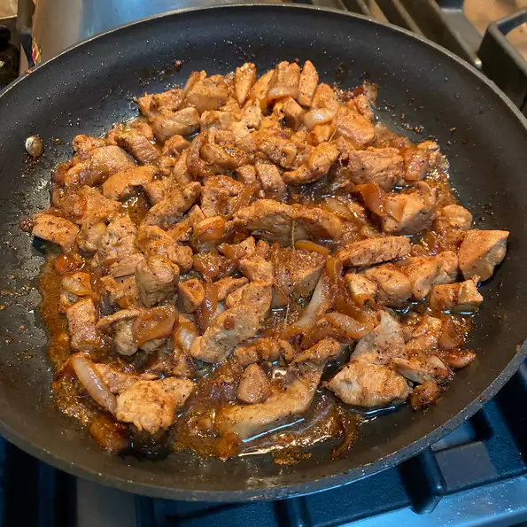

Home
Adobo

Description
Classic chicken adobo recipe that's simple to make and loved by all who try it. It has been modified to be a bit
saucier than traditional adobo and is delicious served over rice.
Ingredients
Steps
- Heat vegetable oil in a large skillet over medium-high heat. Cook chicken pieces until golden brown, 2 to 3
minutes per side. Transfer chicken to a plate and set aside.
- Add onion and garlic to the skillet; cook until softened and brown, about 6 minutes. Pour in soy sauce and
vinegar and season with garlic powder, black pepper, and bay leaf.
- Return chicken to pan, increase heat to high, and bring to a boil. Reduce heat to medium-low, cover, and
simmer until chicken is tender and cooked through, 35 to 40 minutes.